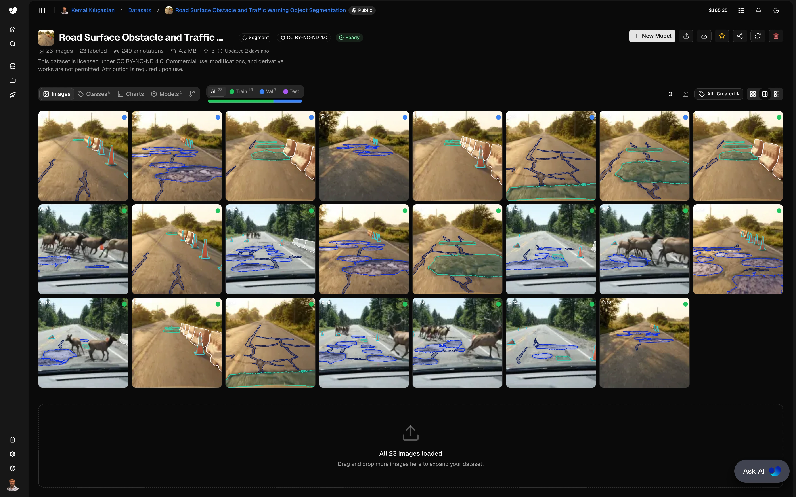
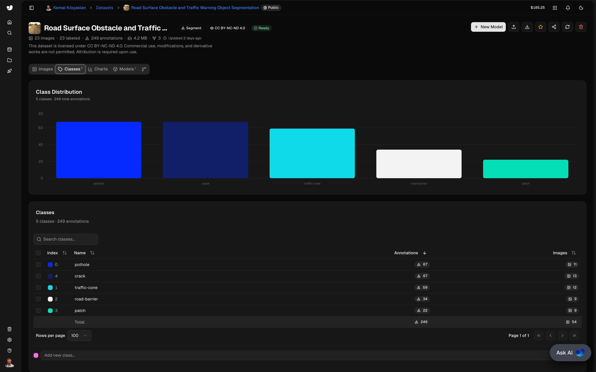
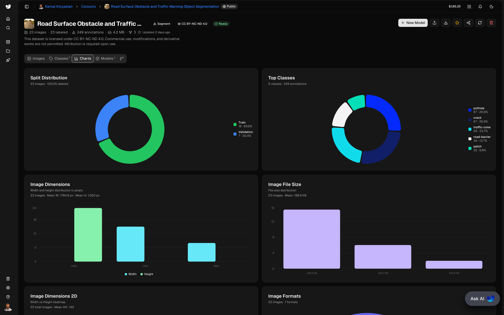
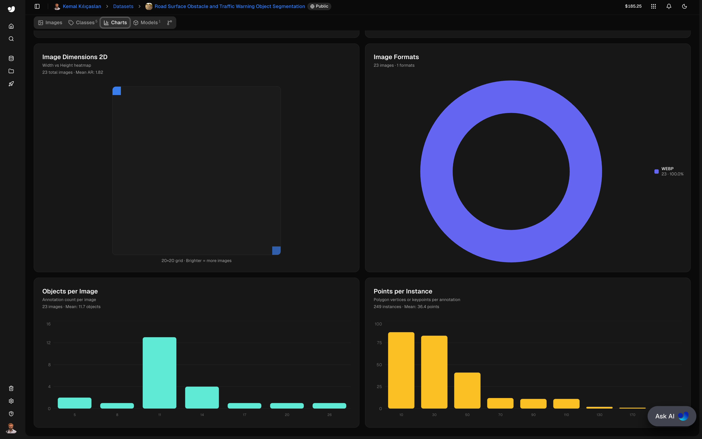
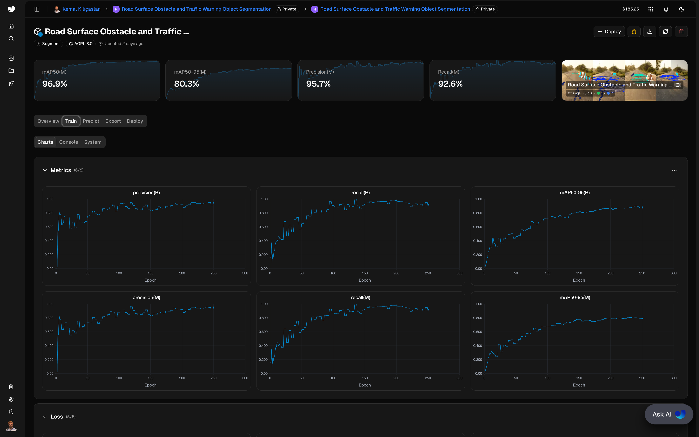

1. Introduction
This project implements a real-time road surface obstacle and traffic warning object segmentation system using a custom-trained YOLO26x-seg segmentation model on the Ultralytics Platform. The system processes road footage to detect and segment five classes of road-level features — organized in two semantic groups — providing pixel-level masks for ADAS, autonomous driving, and road infrastructure monitoring applications.
Road perception failures in autonomous vehicles often stem from elements the model wasn't trained to recognize. This system addresses that gap by unifying surface-level hazards (pothole, crack, patch) and traffic warning objects (traffic-cone, road-barrier) into a single segmentation pipeline, enabling holistic road scene understanding through one inference pass.
The implementation demonstrates practical applications of instance segmentation for vehicle perception, processing video streams to produce per-class colored masks, anti-aliased contour outlines, and instance-level confidence labels.
Core Features:
- Real-time multi-class instance segmentation of road surface and traffic warning objects
- 5-class detection: pothole, traffic-cone, road-barrier, patch, crack
- Two-group taxonomy: Road Surface Obstacles (pothole, crack, patch) and Traffic Warning Objects (traffic-cone, road-barrier)
- Per-class colored mask blending with configurable transparency
- Largest-first paint order so smaller, closer instances remain visible on top
- Anti-aliased contour outlines and luma-aware label text contrast
- Annotated video recording with class + confidence labels per instance
- Custom-trained model: 91.0% mAP50, 67.8% mAP50-95, 86.3% Precision, 85.2% Recall
2. Methodology / Approach
The system employs a custom-trained YOLO26x-seg segmentation model to produce pixel-level masks for each detected instance within every video frame. A two-stage rendering pipeline then composes the visualization: filled translucent masks are blended onto the frame in largest-first order, then anti-aliased contour outlines and labels are drawn on top.
2.1 System Architecture
The road surface obstacle and traffic warning object segmentation pipeline consists of:
- YOLO Segmentation Inference: Detect all instances of
pothole,traffic-cone,road-barrier,patch, andcrackwith binary masks, class IDs, and confidence scores - Mask Resize: Up-sample model output masks to original frame resolution using nearest-neighbour interpolation
- Largest-First Mask Rendering: Paint per-class colored masks onto the frame so smaller instances remain visible on top of larger ones
- Contour Outline: Extract external contours from each binary mask and draw anti-aliased outlines
- Label Overlay: Place class + confidence labels at each instance's anchor point with luma-aware text color
- Video Output: Annotated frames written to output video file
2.2 Processing Pipeline
[Video Input]
↓
[YOLO Segmentation Inference] → [Masks + Classes + Confidences]
↓
[Mask Resize to Frame Resolution]
↓
[Largest-First Mask Rendering with Per-Class Colors]
↓
[Contour Outline + Class Label Overlay]
↓
[Video Output]2.3 Implementation Strategy
The implementation uses the Ultralytics YOLO framework for segmentation inference and OpenCV for video processing, mask rendering, contour drawing, and text overlay. The visualization is intentionally split into two passes: a fill pass that blends colored masks via alpha composition, and an outline pass that draws contours and labels on top of the blended frame. This ensures that contour edges remain crisp regardless of mask transparency, and that labels are never visually drowned out by the mask colors. Largest-first paint ordering prevents large surface defects (long cracks, wide patches) from occluding smaller, closer instances such as a single traffic-cone or distant pothole.
3. Mathematical Framework
3.1 Mask IoU and Non-Maximum Suppression
During inference, YOLO applies Non-Maximum Suppression (NMS) using Intersection over Union to discard overlapping predictions:
$$\text{IoU}(A, B) = \frac{|A \cap B|}{|A \cup B|}$$
Predictions with IoU above the configured threshold (IOU_THRESHOLD = 0.55) are suppressed in favor of the higher-confidence detection. This filtering happens before the masks reach the rendering pipeline.
3.2 Alpha-Blended Mask Overlay
Per-class colored masks are blended onto the original frame via alpha compositing:
$$I_{\text{out}} = (1 - \alpha) \cdot I_{\text{overlay}} + \alpha \cdot I_{\text{frame}}$$
where $\alpha = 0.4$ is the configured MASK_ALPHA. The overlay image is constructed by painting each mask region with its class color in largest-first order:
$$I_{\text{overlay}}(x, y) = C_{c}, \quad \forall (x, y) \in M_{i}, \quad c = \text{class}(i)$$
3.3 Luma-Based Adaptive Text Color
Label text color is chosen automatically to maximize legibility against each class's mask color, using the BT.601 luma approximation:
$$Y = 0.299 R + 0.587 G + 0.114 B$$
Text color is then selected by threshold on the perceived brightness:
$$T(Y) = \begin{cases} \text{black} & \text{if } Y > 160 \\ \text{white} & \text{otherwise} \end{cases}$$
3.4 Performance Metrics
Mask-level performance is reported via standard segmentation metrics:
$$\text{Precision} = \frac{TP}{TP + FP}, \quad \text{Recall} = \frac{TP}{TP + FN}$$
$$\text{mAP}_{50}^{(M)} = \frac{1}{N} \sum_{c=1}^{N} \text{AP}_{c}^{50, \text{mask}}, \quad \text{mAP}_{50:95}^{(M)} = \frac{1}{10} \sum_{t \in \{0.5, 0.55, ..., 0.95\}} \text{mAP}_{t}^{(M)}$$
where $TP$, $FP$, $FN$ are evaluated using mask IoU at the corresponding threshold $t$, and the average is taken over $N = 5$ classes.
4. Dataset
Dataset Name: Road-Surface-Obstacle-and-Traffic-Warning-Object-Segmentation
Platform: Ultralytics Platform (Public)
License: CC BY-NC-ND 4.0
Total Images: 23
Total Annotations: 249
Image Format: WEBP (100%)
Mean Image Size: 1,784.8 × 1,050 px (Mean AR: 1.82)
Mean File Size: 188.9 KB
Total Dataset Size: 4.2 MB
Split Distribution:
| Split | Images | Percentage |
|---|---|---|
| Train | 16 | 69.6% |
| Validation | 7 | 30.4% |
Class Distribution:
| Index | Class | Annotations | Images |
|---|---|---|---|
| 0 | pothole | 67 (26.9%) | 11 |
| 4 | crack | 67 (26.9%) | 13 |
| 1 | traffic-cone | 59 (23.7%) | 12 |
| 2 | road-barrier | 34 (13.7%) | 9 |
| 3 | patch | 22 (8.8%) | 9 |
| — | Total | 249 | 23 |
Annotation Statistics:
- Mean objects per image: 11.7
- Mean polygon vertices per instance: 36.4
- Total instances: 249
5. Model
Model Name: road-surface-obstacle-and-traffic-warning-object-segmentation.pt
Platform: Ultralytics Platform
License: AGPL-3.0
Architecture: YOLO26x-seg (Ultralytics)
Training Hardware: RTX PRO 6000 (cloud GPU)
Classes: 5 (pothole, traffic-cone, road-barrier, patch, crack)
Model Metrics (Mask):
| Metric | Value |
|---|---|
| mAP50 (M) | 96.9% |
| mAP50-95 (M) | 80.3% |
| Precision (M) | 95.7% |
| Recall (M) | 92.6% |
Training Notes:
- End-to-end training, annotation, and export performed on the Ultralytics Platform
- Annotation accelerated via SAM 3 click-to-segment workflow
- Browser-based prediction tab used for inference testing without local GPU
- Steady convergence of
box_loss,cls_loss,dfl_loss, andseg_loss
6. Requirements
requirements.txt
opencv-python>=4.8.0
numpy>=1.24.0
ultralytics>=8.0.07. Installation & Configuration
7.1 Environment Setup
# Clone the repository
git clone https://github.com/kemalkilicaslan/Road-Surface-Obstacle-and-Traffic-Warning-Object-Segmentation-System.git
cd Road-Surface-Obstacle-and-Traffic-Warning-Object-Segmentation-System
# Install required packages
pip install -r requirements.txt7.2 Project Structure
Road-Surface-Obstacle-and-Traffic-Warning-Object-Segmentation-System/
├── Road-Surface-Obstacle-and-Traffic-Warning-Object-Segmentation-System.py
├── README.md
├── requirements.txt
└── LICENSE7.3 Required Files
- Custom YOLO Segmentation Model:
road-surface-obstacle-and-traffic-warning-object-segmentation.pt(place in project directory) - Input Video: Road footage (MP4, MOV, AVI)
8. Usage / How to Run
8.1 Basic Execution
python Road-Surface-Obstacle-and-Traffic-Warning-Object-Segmentation-System.py8.2 Configuration Parameters
# Model and inference configuration
MODEL_PATH = "road-surface-obstacle-and-traffic-warning-object-segmentation.pt"
CONFIDENCE_THRESHOLD = 0.6 # Minimum confidence for a detection to be kept
IOU_THRESHOLD = 0.9 # NMS IoU threshold during inference
MASK_ALPHA = 0.4 # Mask transparency: 0.0 = fully opaque, 1.0 = invisible
# Visualization parameters
CONTOUR_THICKNESS = 2
LABEL_FONT = cv2.FONT_HERSHEY_DUPLEX
LABEL_SCALE = 0.6
LABEL_THICKNESS = 1
LABEL_PADDING = 48.3 Input / Output
# Update these lines in the script for your video
video_capture = cv2.VideoCapture("Road-Surface-Obstacle-and-Traffic-Warning-Object.mp4")
output_file = "Road-Surface-Obstacle-and-Traffic-Warning-Object-Segmentation.mp4"8.4 Controls
- Press
qto quit the application during playback
8.5 Class Color Coding
| Group | Class | BGR Color |
|---|---|---|
| Road Surface Obstacles | pothole | (0, 60, 255) |
| crack | (10, 35, 10) |
|
| patch | (170, 235, 35) |
|
| Traffic Warning Objects | traffic-cone | (220, 230, 20) |
| road-barrier | (235, 235, 235) |
9. Application / Results
9.1 Input Video
Road Surface Obstacle and Traffic Warning Object:
9.2 Output Video
Road Surface Obstacle and Traffic Warning Object Segmentation:
9.3 Dataset Overview
Dataset & Charts:

Class Distribution:

Dataset Charts 1:

Dataset Charts 2:

9.4 Model Metrics
Training Metrics & Loss Curves:

mAP50: 96.9% | mAP50-95: 80.3% | Precision: 95.7% | Recall: 92.6%
10. Tech Stack
10.1 Core Technologies
- Programming Language: Python 3.8+
- Computer Vision: OpenCV 4.8+
- Deep Learning Framework: Ultralytics YOLO 8.0+
- Numerical Computing: NumPy 1.24+
- Training Platform: Ultralytics Platform
10.2 Libraries & Dependencies
| Library | Version | Purpose |
|---|---|---|
| opencv-python | 4.8+ | Video I/O, mask blending, contour drawing, label overlay |
| ultralytics | 8.0+ | YOLO segmentation model inference |
| numpy | 1.24+ | Mask array operations, ordering, resizing |
10.3 Algorithm Components
| Component | Method | Purpose |
|---|---|---|
| Instance Segmentation | Custom YOLO26x-seg | Detect and mask 5 road-level classes |
| Mask Resize | Nearest-neighbour interpolation | Match mask resolution to original frame |
| Mask Blending | Alpha composition (cv2.addWeighted) | Translucent per-class colored overlay |
| Contour Extraction | cv2.findContours (RETR_EXTERNAL) | Anti-aliased mask outlines |
| Label Contrast | BT.601 luma threshold | Auto black/white text per background |
10.4 Detection Parameters
| Parameter | Value | Description |
|---|---|---|
| Confidence Threshold | 0.6 | Minimum YOLO inference confidence |
| IoU Threshold | 0.9 | NMS IoU threshold |
| Mask Alpha | 0.4 | Mask transparency for blending |
| Contour Thickness | 2 px | Width of mask outline |
| Label Scale | 0.6 | Class label font scale |
11. License
This project is licensed under the Creative Commons Attribution-NonCommercial-NoDerivatives 4.0 International (CC BY-NC-ND 4.0).
12. References
- Ultralytics Platform Documentation — Model training, inference, and deployment.
- Ultralytics Platform Road Surface Obstacle and Traffic Warning Object Segmentation System — Dataset annotation, training, and export.
- OpenCV Video I/O and Drawing Functions Documentation.
Acknowledgments
Special thanks to the Ultralytics team for the YOLO framework and Ultralytics Platform, which was used for dataset annotation, segmentation model training, and export. Thanks to the OpenCV community for providing excellent real-time video processing tools.
Note: This system is designed for research, educational, and authorized ADAS prototyping purposes. Detection accuracy may vary depending on camera angle, occlusion, lighting conditions, and domain shift between training and deployment environments. For production autonomous driving applications, additional validation with site-specific data, sensor fusion, and uncertainty signaling are required.